01Overview概览
The Linux terminal is the sharpest test of autonomous long-horizon execution: it binds abstract planning to irreversible side effects, and every attempt is adjudicated by the task's own held-out verifier rather than by a preference model.
Linux 终端是对自主长程执行最锋利的检验：它把抽象规划绑定到不可逆的副作用上， 而每一次尝试都由任务自带的留出验证器裁决，而不是由偏好模型裁决。
We introduce T1, obtained by post-training Qwen3.5-122B-A10B with PPO on terminal tasks. Two difficulties dominate this regime, and the recipe is organized around them.
我们提出 T1：以 Qwen3.5-122B-A10B 为底座、在终端任务上用 PPO 后训练得到。 这个场景由两个困难主导，整套配方就是围绕它们组织的。
Experts hold most of the parameters, and a discrete router picks a small subset per token. Tiny numeric differences between the two stacks flip those selections, while the harness perturbs the token stream at every turn boundary. We fix the two axes separately: TITO for tokens, R³ for experts.
专家持有绝大部分参数，而离散路由器为每个 token 只挑出其中一小部分。两套栈之间极小的数值差异就会翻转这些选择，而 harness 又在每个轮次边界扰动 token 流。我们把这两条轴分开解决：TITO 管 token，R³ 管专家。
A rollout batch costs hundreds of sandbox-hours, yet a binary outcome returns one bit per trajectory, and our first binary-reward campaign never passed its supervised baseline. We score by the number of passing assertions on a fixed global scale, feeding a warm-started critic.
一个 rollout batch 要花掉数百沙箱小时，而二值结果每条轨迹只回报 1 bit；我们第一次二值奖励实验从未超过监督基线。我们改为按通过断言的个数在固定的全局尺度上计分，并喂给一个 warm-start 过的 critic。
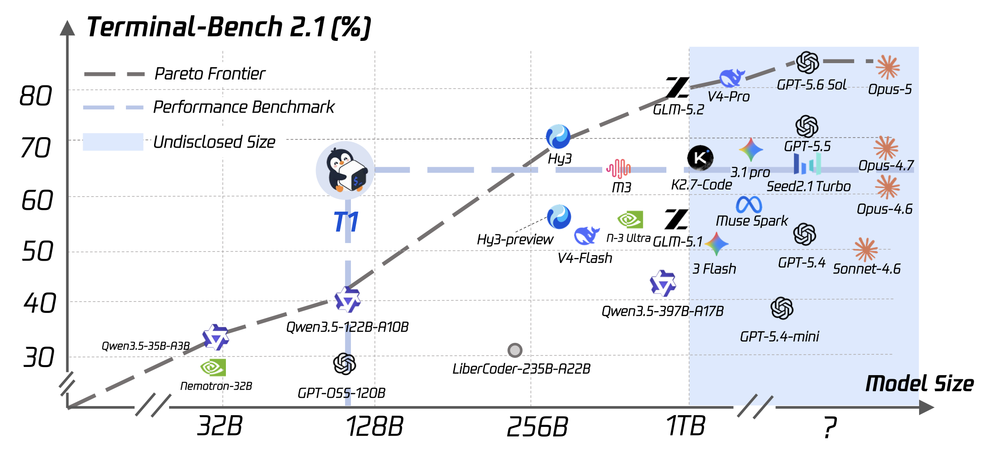
- A 122B MoE terminal agent trained purely by RL on executed outcomes, up to 300+ tool-call turns per task.
- A stabilization stack for large-scale sparse agentic RL: TITO, routing replay, and a warm-started critic.
- A dense execution reward with its measured behaviour, plus the corpus audit that makes such a reward safe to optimize.
- 一个 122B MoE 终端 Agent，纯粹用执行结果上的强化学习训练，单任务可达 300+ 次工具调用。
- 一套面向大规模稀疏 Agent RL 的稳定化栈：TITO、路由回放，以及 warm-start 的 critic。
- 一个稠密执行奖励及其实测行为，以及让这种奖励可被安全优化的语料审计。
02Approach方法
A training backend and inference replicas run concurrently on disjoint accelerators under slime, pipelining step t training with step t+1 generation. Our terminal-agent integration attaches additively through public extension points rather than by forking the framework.
训练后端与推理副本在互不相交的加速器上并发运行（框架为 slime）， 把第 t 步的训练与第 t+1 步的生成流水化。 我们的终端 Agent 集成通过公开扩展点加法式接入，而不是 fork 框架。
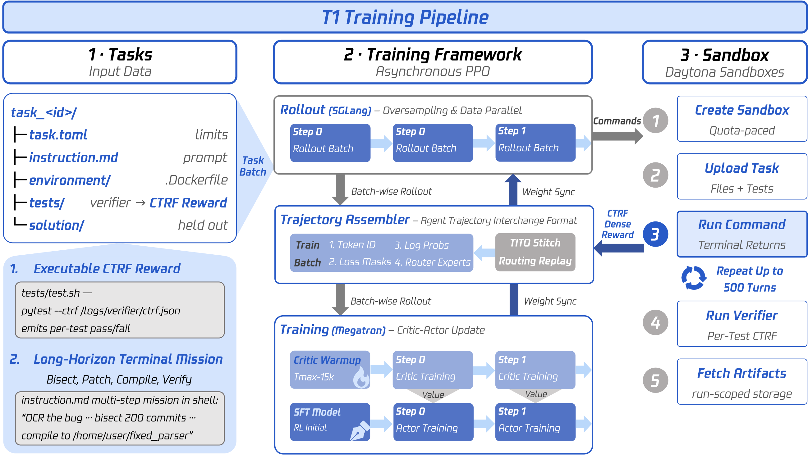
Three ingredients. Select one to open it.
三个要素。点击其中一个展开。
Recursive synthesis of terminal training tasks
No reinforcement signal can be richer than what its verifier can measure, which makes task construction a design decision rather than a preprocessing step. Based on RST, each task is self-contained: resource limits, a long-horizon instruction, an environment specification, a held-out verifier, and a reference solution the agent never sees.
The verifier is the load-bearing part, because it reports every assertion separately instead of one pass or fail. T1 trains on a selected high-quality 15K subset of RST, chosen along verifier, solution, instruction and task-value dimensions.
没有任何强化信号能比它的验证器所能测量的更丰富，这让任务构造成为一个设计决策，而不是预处理步骤。 基于 RST，每个任务都是自包含的：资源上限、一条长程指令、一份环境规格、一个留出验证器， 以及 Agent 永远看不到的参考解。
验证器是承重结构，因为它分别报告每一条断言，而不是给一个总的通过或失败。 T1 在从 RST 中挑出的高质量 15K 子集上训练， 挑选依据是验证器、解法、指令与任务价值四个维度。
- TMax-15k — tasks converted from a public corpus. Its verifiers emit only a binary outcome, so only binary rewards are possible here.
- RST-38k — synthesized tasks: RST iteratively extends seed solutions, realigns verifiers and instructions, and sandboxes each task before recursive seeding.
- T1-15k — the audited pool whose verifiers report per-assertion outcomes. It is materialized in quality-rank order, so per-epoch shuffling is mandatory.
- TMax-15k：由公开语料转换而来的任务。它的验证器只发出二值结果，所以这里只能做二值奖励。
- RST-38k：合成任务。RST 迭代地扩展种子解法、重新对齐验证器与指令、把每个任务沙箱化，然后递归再播种。
- T1-15k：经过审计的数据池，其验证器逐条报告断言结果。它按质量排名顺序物化，因此逐 epoch 打乱是必须的。
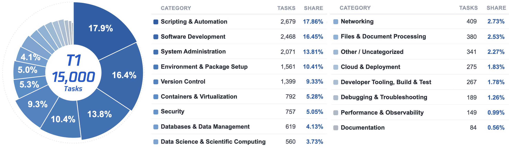
Dataset construction and audit数据集构造与审计
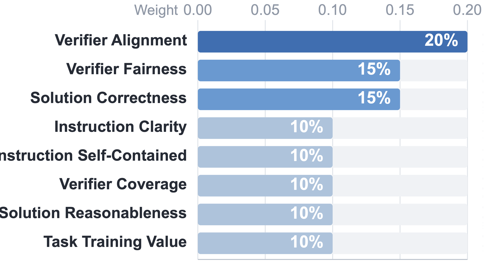
Both synthesized pools come from recursive task synthesis, which grows a curriculum rather than sampling tasks independently. Each round takes accepted tasks as seeds, picks a feasible rewrite operator, extends the reference solution with additional executable steps, then aligns the environment, verifier and public instruction to that longer workflow. Because difficulty is added to the executable path before the instruction is rewritten, horizons lengthen without the task degenerating into a longer prompt over the same behaviour.
Synthesis yield alone does not make a pool a usable RL signal, so T1-15k is the subset surviving an LLM audit. Instruction–verifier alignment carries the largest single weight: a mismatch between the public instruction and what the held-out verifier enforces is a hidden requirement, and it makes the task unusable because the agent is punished for failing a criterion it was never shown. The rest of the weight splits between verifier quality and solution quality, and tasks are hard-rejected for hidden requirements, test leakage, solution shortcuts, or verifiers too weak to validate the goal.
两个合成池都来自递归任务合成：它培育课程，而不是独立采样任务。 每一轮把已被接受的任务作为种子，选择一个可行的改写算子，用额外的可执行步骤扩展参考解， 再把环境、验证器与公开指令对齐到这条更长的工作流。 因为难度是先加在可执行路径上、然后才重写指令，horizon 会变长， 而任务不会退化成「同样行为的更长 prompt」。
合成产量本身不足以让一个池成为可用的 RL 信号，所以 T1-15k 是通过 LLM 审计后留下的子集。 指令与验证器的一致性是单项权重最高的维度： 公开指令与留出验证器所强制内容之间的不匹配就是「隐藏需求」，它会让任务彻底不可用 ——因为 Agent 会因为一条它从未被展示的判据而受罚。 其余权重分给验证器质量与解法质量；任务在四类问题上被硬性拒绝： 隐藏需求、测试泄漏、解法投机，以及验证器弱到无法验证任务目标。
Aggregation with lineage; static pre-check with executable validation; a semantic pass that accepts, flags or rejects each task; an instruction-only repair that leaves the tests untouched; and a re-audit.
带血统信息的聚合；静态预检加可执行校验；对每个任务做通过、边界或拒绝判定的语义审查； 只改指令、不动测试的修复；以及一次复审。
Stable MoE reinforcement learning
Between the trajectory a sandbox produces and the gradient the trainer applies lie dozens of turns, two independent execution stacks and a discrete router — each able to silently attribute the update to a policy that never generated the data. The agent therefore exchanges token identifiers rather than text, and receives back their log-probabilities and the expert routing chosen at every layer.
Three mechanisms build on that record: TITO for the token stream, R³ for expert routing, and a warm-started critic that turns the aligned trajectories into usable advantages.
在沙箱产出的轨迹与训练器施加的梯度之间，横着几十个轮次、两套独立的执行栈和一个离散路由器 ——它们每一个都可能悄悄把更新归因给一个从未产生该数据的策略。因此 Agent 交换的是 token id 而不是文本，并取回它们的对数概率与每层选中的专家路由。
三个机制建立在这份记录之上：TITO 管 token 流，R³ 管专家路由， 以及一个 warm-start 的 critic，把已对齐的轨迹变成可用的优势。
The harness persists each assistant message as text and re-renders the whole history before every turn, and that round trip is not the identity. TITO removes it where we own both endpoints: the sampler returns token identifiers with their log-probabilities, encoding runs once per turn rather than once per history replay, and templates are pinned so rendering stays append-only.
Where the harness still forces a mismatch, the assembler repairs the boundary by the first case that applies:
- strict — the turn is already an exact prefix of the next prompt.
- normalized — trimming a bounded number of edge tokens restores the prefix, which keeps the repair auditable.
- retokenized — the assembler matches in text space instead. The harness's re-tokenized copy never enters the training stream; the sampled identifiers do.
- split — nothing holds, so a new chunk opens under the same trial.
An auditor then re-locates every completion inside the next prompt and reports zero drift inside the loss region.
harness 把每条 assistant 消息以文本持久化，并在每一轮之前重新渲染整段历史， 而这个往返并不是恒等映射。在两端都由我们掌握的地方，TITO 直接消除它： 采样器返回 token id 及其对数概率，编码每轮只做一次而不是每次历史重放都做一次， 模板被钉住以保证渲染是 append-only 的。
在 harness 仍然强制产生不匹配的地方，装配器按第一个成立的情形修复该边界：
- strict：该轮已经是下一轮 prompt 的精确前缀。
- normalized：裁掉有界个数的边缘 token 即可恢复前缀，这让修复保持可审计。
- retokenized：改为在文本空间匹配。harness 重新分词的那份副本永不进入训练流，进入的始终是被采样的 id。
- split：以上都不成立，于是在同一试验下开一个新 chunk。
随后一个审计器在下一轮 prompt 内重新定位每一段补全，并报告损失区内零漂移。
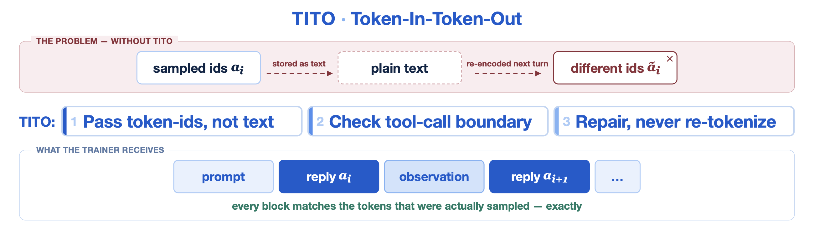
Router selection is a discrete top-k, so a numeric difference far below any tolerance one would place on a logit can swap a selected expert for its runner-up — substituting one sub-network for another between rollout and training.
R³ records the expert sets inference selected and constrains the training forward pass to reuse them: the selection comes from the record, while gating stays on the live scores of the current parameters. Replacing the top-k by a lookup removes the discontinuity, and reading gates from live scores keeps the router trainable. The masks are a by-product of a forward pass that already computed them, so capture costs transport but no arithmetic. Records ride the token pipeline's stitching and sharding, and a missing capture aborts the rollout rather than silently dropping the sample.
路由选择是一个离散的 top-k，因此一个远低于任何 logit 容差的数值差， 就可能把某个被选专家换成它的次席——在 rollout 与训练之间把一个子网络替换成另一个。
R³ 记录推理选出的专家集，并约束训练前向复用它们：选择取自记录， 而门控仍然落在当前参数的实时分数上。 用查表替代 top-k 消除了那个不连续性，而从实时分数读门控又让路由器保持可训练。 这些掩码是一次本来就已经算出它们的前向的副产物，因此记录只增加传输、不增加算术。 记录接受与 token 流相同的拼接与分片；capture 缺失会中止 rollout，而不是静默丢样本。
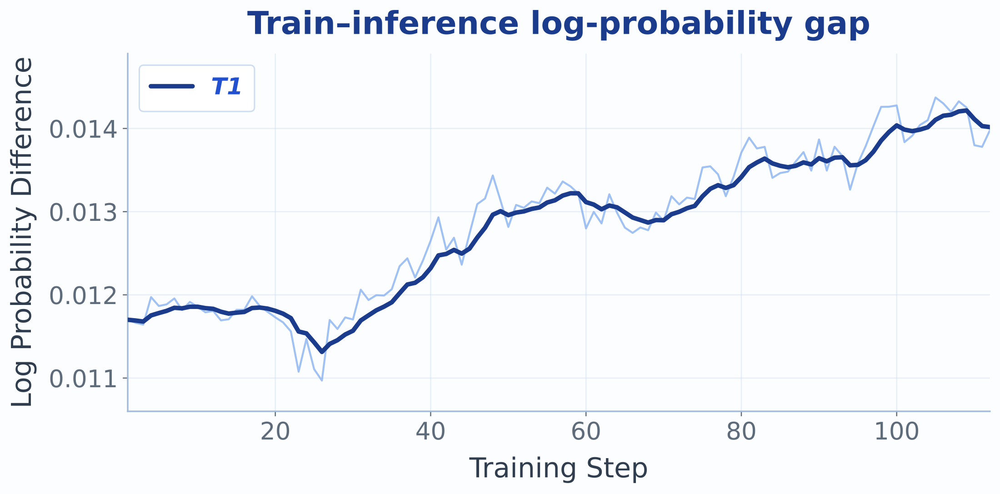
Measured effect. Together the two mechanisms cut the mask-weighted mean gap by roughly a third. A residual is expected, since R³ aligns expert selection but not kernel numerics, and a slow upward drift is not a regression either: the gap also contains the distance the policy legitimately travelled during one update, and that term grows as the policy improves.
实测效果。两个机制合起来把掩码加权的平均 gap 压掉约三分之一。 残差是预期的，因为 R³ 对齐专家选择但不对齐 kernel 数值； 缓慢上漂同样不是退化：这个 gap 里还包含策略在一次更新中合法走过的距离， 而随着策略变好，这一项会增长。
| Configuration配置 | mean gap平均 gap |
|---|---|
| T1 (TITO + R³) | 0.013 |
| without TITO and R³不用 TITO 与 R³ | 0.021 |
PPO here uses a separate, full-size critic that shares the actor's devices through forced offload. It trains first at each step and hands its pre-update values to the actor, so the advantage estimator and the value clip are anchored to one fixed function. Before any policy step, Critic Warm-Up trains the value network alone with the actor frozen; the dense-reward campaign then loads those weights only, so no optimizer moment crosses runs.
Explained variance decides whether this works, and it is unbounded below: a negative value means subtracting the critic adds variance to the advantage instead of removing it. Cold-started, it opens deeply negative and stays negative through much of the run; warm-started, it never goes negative. Reward nevertheless stayed flat across critic-tuning settings, which is what redirected our attention from the optimizer to the data and the reward.
这里的 PPO 使用一个独立的全尺寸 critic，通过强制 offload 与 actor 共享设备。 它每步先训练，并把更新前的价值交给 actor， 因此优势估计与价值裁剪都被锚定在同一个固定函数上。 在任何策略步之前，Critic Warm-Up 先冻结 actor、只训练价值网络； 稠密奖励实验随后只加载这些权重，因此没有优化器动量跨实验流动。
解释方差决定这套做法是否成立，而它下无界： 负值意味着减去 critic 是在给优势增加方差而不是减少方差。 冷启动时它一开始就深度为负，并在实验的很大一段里保持为负；warm-start 之后它从未转负。 但奖励在各种 critic 调参设置之间仍然保持平坦， 这正是把我们的注意力从优化器转向数据与奖励的原因。
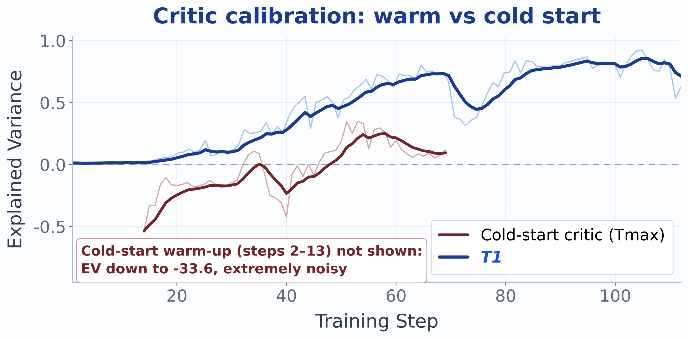
- Both KL terms are off: the frozen reference routes with its own selection and would charge the policy for a bookkeeping difference.
- The MoE load-balancing coefficient is zero: balancing pressure asks the router to redistribute exactly the choices replay asks it to reproduce.
- The surrogate clips symmetrically, with Adam and a constant learning rate — no schedule, no entropy bonus.
- Oversampling: each step launches more trials than the batch needs and admits the first to complete, bounding step time at the price of a mild bias against the longest trials.
- 两个 KL 项都关闭：冻结的 reference 用自己的选择做路由，会为一个记账差异惩罚策略。
- MoE 负载均衡系数为零：均衡压力要求路由器重新分配的，恰好就是回放要求它复现的那些选择。
- 替代目标对称裁剪，配 Adam 与常数学习率——没有调度，也没有熵奖励。
- 过采样：每步启动多于 batch 所需的试验、接纳最先完成的那些，以此约束步时间，代价是对最长试验有轻微偏置。
Dense verification reward design
Many tasks are too hard to solve outright, and under a binary reward those trajectories all score zero even when part of the requirements was satisfied — partial progress is invisible, and a batch costing hundreds of sandbox-hours returns one bit per trajectory.
We spend the verifier's full resolution instead: each trial's per-assertion outcome becomes a dense process reward, scored by the number of assertions satisfied on a scale fixed once for the whole run. Previously zero-reward trajectories then become graded supervision.
很多任务对模型来说太难、无法一次做完；在二值奖励下，这些轨迹全部得零， 即使其中一部分要求已经被满足——部分进展完全不可见， 而一个要花掉数百沙箱小时的 batch，每条轨迹只回报 1 bit。
我们改为花掉验证器的全部分辨率：每个试验的逐断言结果变成一个稠密过程奖励， 按满足的断言个数、在一个为整场实验固定一次的尺度上计分。 原本零奖励的轨迹于是变成了分级监督。
- Absolute count, not ratio. Batches mix easy and hard tasks without a curriculum, and a ratio makes half of a long task look like half of a short one. Since harder tasks were synthesized with more checks, an absolute count better reflects verified progress.
- Fixed global scale. The normalizer is chosen once from the pool's assertion-count distribution and never moves, since a per-batch maximum would let the reward scale drift and hand the critic an inconsistent target. A missing report falls back to the binary outcome, so a solved task never scores zero.
- Credit assignment. Density is about value resolution, not temporal placement: the scalar still lands on the last response token and the critic distributes credit over the horizon. With one sample per task there is no group baseline, so the critic is the only baseline.
- 用绝对个数，不用比例。batch 里混合了易题与难题且没有课程安排，而比例会让「长任务完成一半」看起来等同于「短任务完成一半」。由于更难的任务在合成时就配了更多检查，绝对个数更能反映已验证的进展。
- 固定的全局尺度。归一化常数由数据池的断言数分布一次性确定，之后不再变动；因为按逐 batch 最大值归一化会让奖励尺度漂移，给 critic 一个不一致的目标。若逐断言报告缺失，该试验回退到二值结果，因此一个真正解决了的任务永不得零分。
- credit 分配。「稠密」说的是取值分辨率而不是时间位置：标量仍然落在最后一个 response token 上，由 critic 把 credit 分配到整个 horizon。每个任务只有一条样本，因此没有组 baseline，critic 是唯一的 baseline。
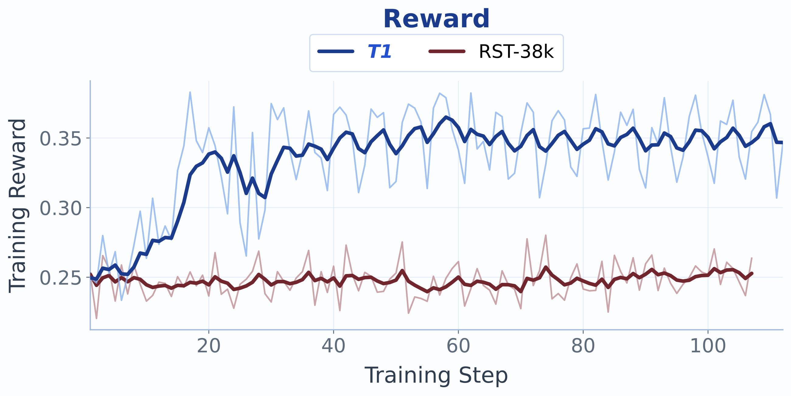
The primary defence against reward hacking is to reject gameable tasks before they enter the pool. The audit hard-rejects hidden requirements, test leakage, solution shortcuts, and verifiers too weak to validate the task's goal.
防止奖励作弊的首要防线，是在任务进入池子之前就拒掉可被钻空子的。审计对隐藏需求、测试泄漏、解法投机以及弱到无法验证任务目标的验证器一律硬性拒绝。
A test-count reward can invite prolonging trajectories to brush more tests. We saw that at smaller scale, so we monitored turns and sequence length closely and observed no runaway growth (Figure 12b). Length shaping stays disabled.
test-count 奖励可能诱使 Agent 拉长轨迹去多蹭几个测试。我们在更小规模上见过这种行为，因此密切监控轮数与序列长度，没有观察到失控增长（图 12b）。长度整形保持关闭。
T1-15k is materialized in quality-rank order, so without shuffling every batch would come from one narrow quality band and the reward distribution would drift over the epoch. A seeded per-epoch permutation keeps those statistics stationary.
T1-15k 按质量排名顺序物化，若不打乱，每个 batch 都来自一个很窄的质量带， 奖励分布会在一个 epoch 内漂移。逐 epoch 的带种子置换让这些统计量保持平稳。
03Results结果
Three held-out suites, none contributing tasks to any training pool: Terminal-Bench 2.1 (89 tasks, fraction resolved), Long-Horizon Terminal Bench (46 hard tasks paying continuous partial credit, reported as average reward), and Terminal-Bench Hard (100 tasks from an independently constructed, harder distribution).
三个留出套件，都没有向任何训练池贡献任务：Terminal-Bench 2.1（89 个任务，报告解决率）、 Long-Horizon Terminal Bench（46 个困难任务，给连续部分分，报告平均奖励）、 以及 Terminal-Bench Hard（100 个任务，来自独立构造且更难的分布）。
All suites run one configuration: Terminus-2 hosted by Harbor, thinking disabled, proactive context compaction on, a fresh cloud sandbox per trial, and 3 attempts per task averaged. Two starting checkpoints appear: the base model and an SFT checkpoint denoted RST.
三个套件跑同一套配置：由 Harbor 承载的 Terminus-2，关闭显式 thinking，开启主动上下文压缩， 每个试验一个新建的云沙箱，每任务 3 次尝试取平均。 实验中出现两个起点 checkpoint：base 模型与记作 RST 的 SFT checkpoint。
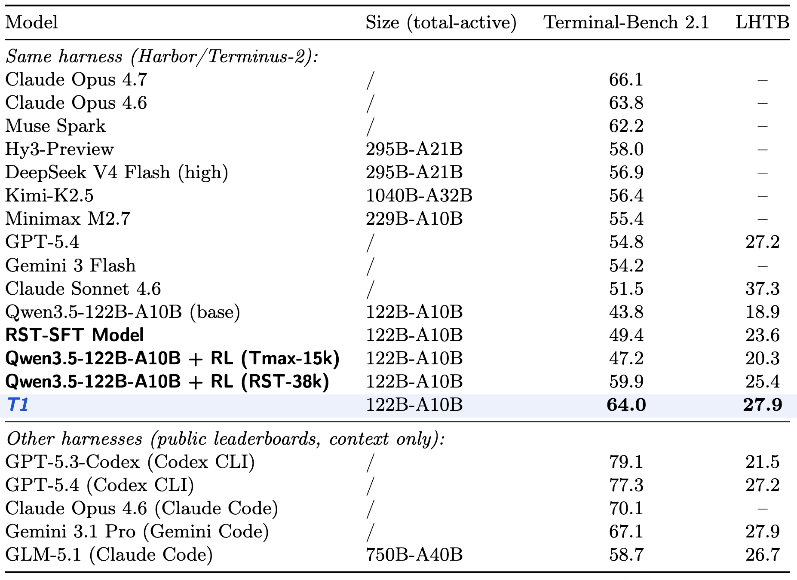
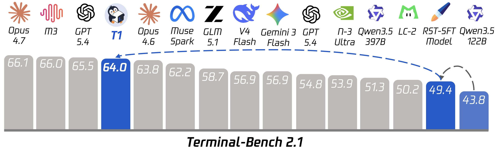
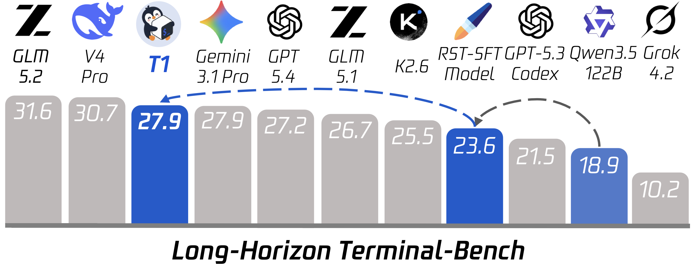
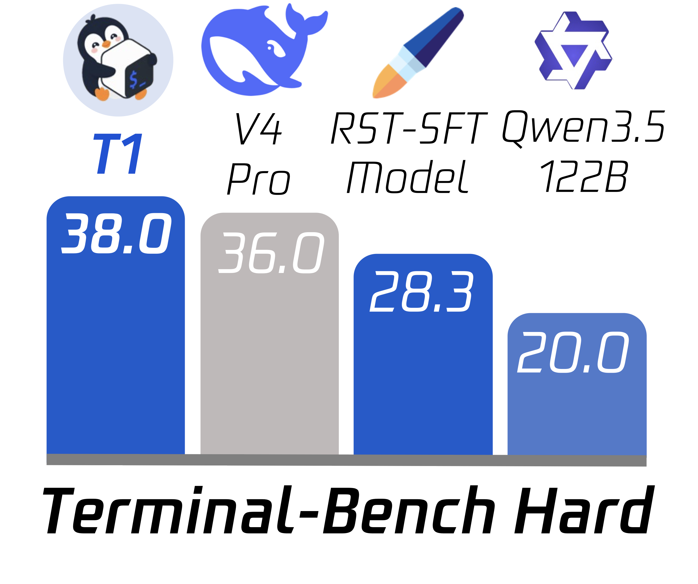
Longer horizons and harder distributions therefore move in the same direction as Terminal-Bench 2.1. The comparison is not uniform across benchmarks, though: Claude Sonnet 4.6 scores below T1 on Terminal-Bench 2.1 yet records 37.3% on LHTB, so long-horizon performance warrants its own evaluation rather than being inferred from one ordering.
更长的 horizon 与更难的分布因此与 Terminal-Bench 2.1 同向移动。 但跨基准的比较并不一致：Claude Sonnet 4.6 在 Terminal-Bench 2.1 上低于 T1， 却在 LHTB 上记录 37.3%，所以长 horizon 的表现值得单独评测，而不能只从一个排序去推断。
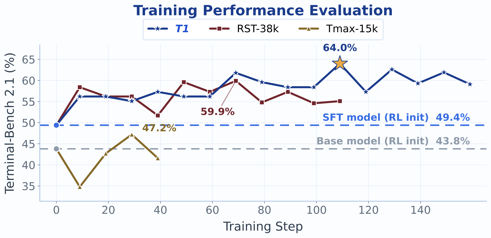
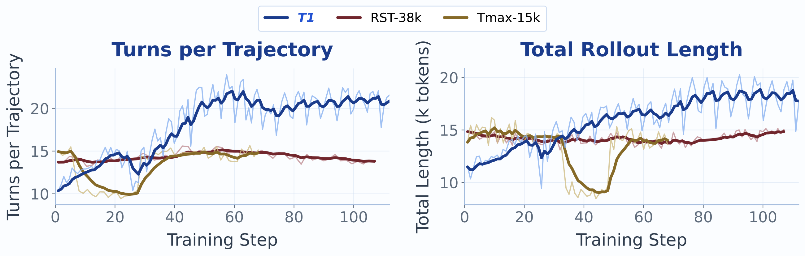
Where the gain lands增益落在哪里
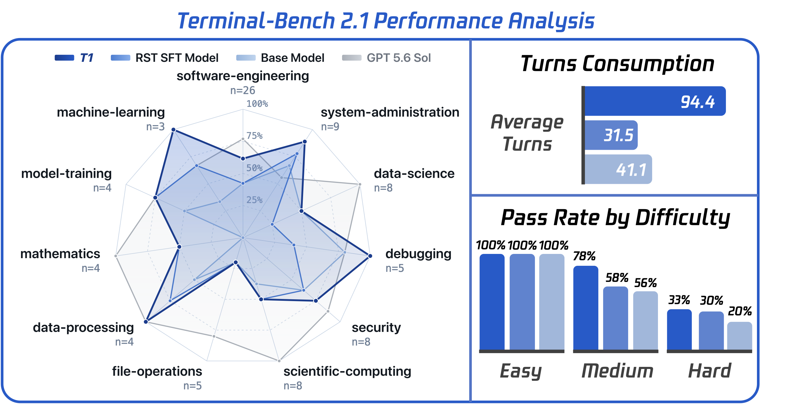
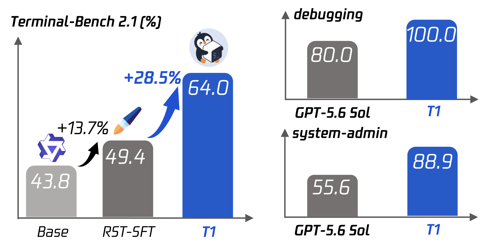
- Gains are uneven across domains. T1 also resolves every data-processing and machine-learning task, but GPT-5.6 Sol stays ahead on data science, scientific computing and mathematics, and file operations remain hard. The concentration of T1-15k in command-line engineering is one plausible explanation.
- Most of the difficulty-level gain is on Medium. Easy leaves no measured headroom, Medium gains about 20 points over SFT, and Hard only about 3 — the hardest group remains the main source of failures.
- Longer interaction is a cost as well as a capability. On representative unsolved tasks T1 spends hundreds of turns where a stronger baseline spends tens, and times out. Resource settings also differ across those comparisons, which limits attribution to capability alone.
- 领域增益并不均匀。T1 还解决了全部数据处理与机器学习任务，但 GPT-5.6 Sol 在数据科学、科学计算与数学上仍然领先，文件操作也仍然困难。T1-15k 集中在命令行工程是一个合理解释。
- 难度层面的增益主要在 Medium。Easy 已没有可测量的空间，Medium 相对 SFT 提升约 20 个点，而 Hard 只提升约 3 个点——最难的一组仍是失败的主要来源。
- 更长的交互既是能力也是代价。在代表性的未解决任务上，T1 花掉数百轮，而更强的基线只用几十轮，并最终超时。这些比较中的资源设置也不同，这限制了把失败完全归因于能力。
04Cite this work引用
If T1 is useful in your research, please cite the technical report.
如果 T1 对你的研究有帮助，请引用这份技术报告。
@article{t1_2026,
title = {T1: Terminal Agent Reinforcement Learning for Long-Horizon Tasks},
author = {Tencent Hy Foundation Model Frontier Team},
journal = {arXiv preprint arXiv:XXXX.XXXXX},
year = {2026},
note = {Placeholder entry; to be updated on release.},
}
The entry above is a placeholder — the report is not published yet, and the identifier and full author list will be updated once it is released.
上面是占位条目——报告尚未发表，编号与完整作者列表会在发布后更新。